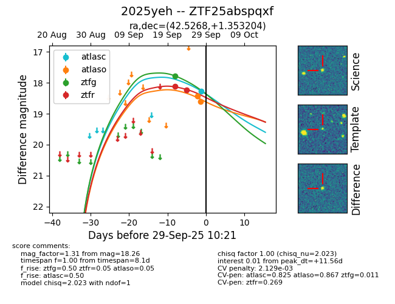
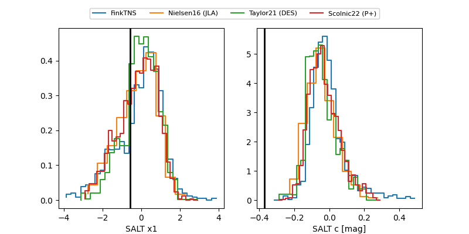

FINK: ZTF25abspqxf
Lasair: ZTF25abspqxf
ALeRCE: ZTF25abspqxf
TNS: 2025yeh
YSE: 2025yeh
ZTF25abspqxf (ztf,fink)
2025yeh (tns,yse)
equatorial (ra, dec) = (42.5268,+1.35320)
galactic (l, b) = (172.8023,-49.67086)


last atlasc=18.26, atlaso=18.61, ztfg=17.78, ztfr=18.23
1 atlasc, 2 atlaso, 1 ztfg, 2 ztfr detections